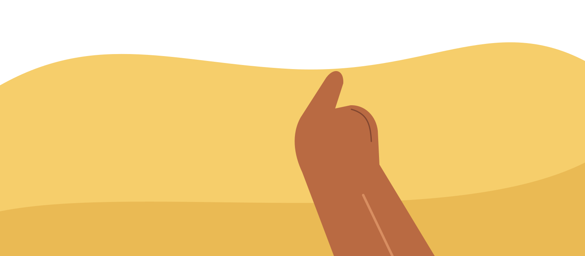
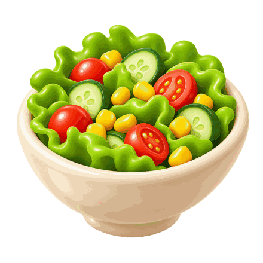
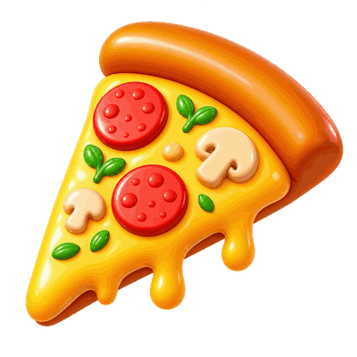
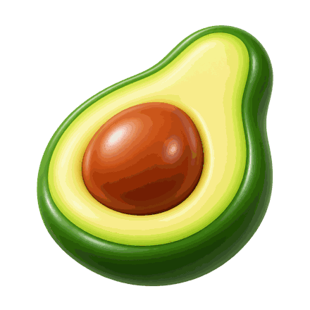
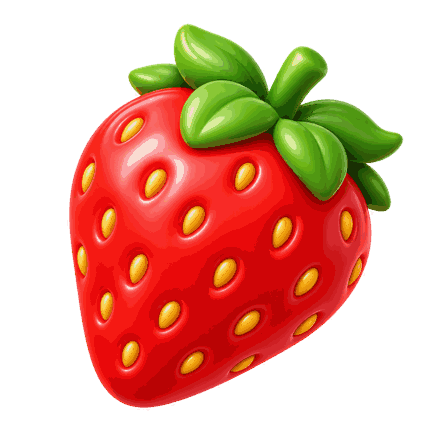
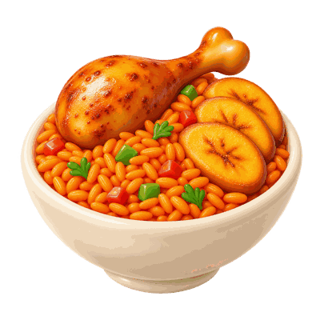

Snap your meal.
Take a photo of your plate to start a new meal entry.
Snap your meals, review estimated calories and macros,
and follow your eating patterns over time.





Take a photo of your plate to start a new meal entry.

Portion size
Check the estimate. Adjust ingredients and portions before saving.
Revisit your meals and explore your nutrition over time.
A photo starts the story. Check the nutrition estimate, adjust the ingredients and portions, then save a meal that reflects your plate.
Bring your meals, estimated calories and daily macro averages together. Look back at what you ate and see how your week adds up.
Yes. Review the meal details and adjust ingredients or portions before you save.
They are estimates. Check the food and portion details to make each entry more useful.
Follow the app flow from taking a meal photo to reviewing it and exploring your meal history.
Start with your next meal. See what you discover.